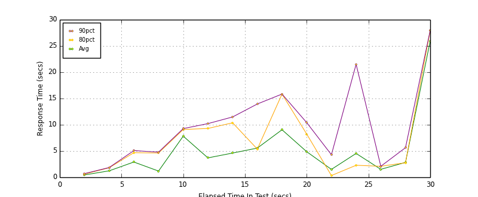
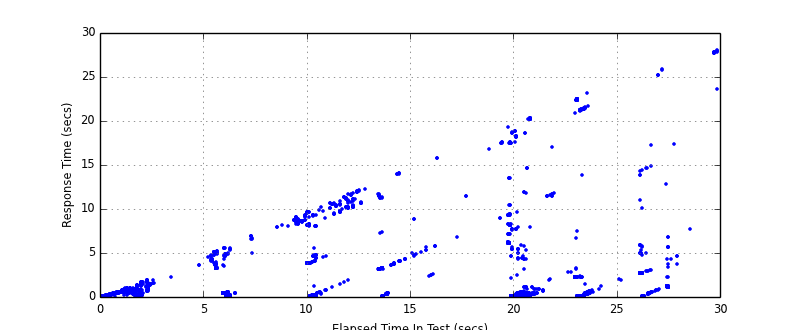
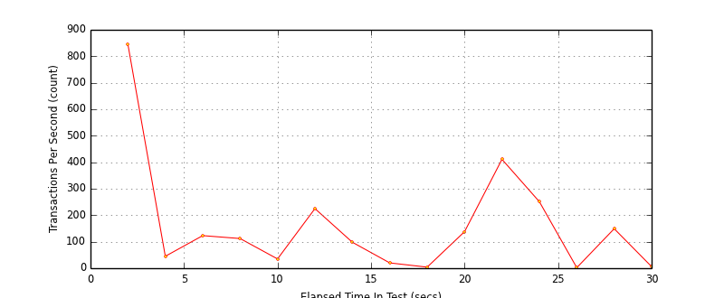
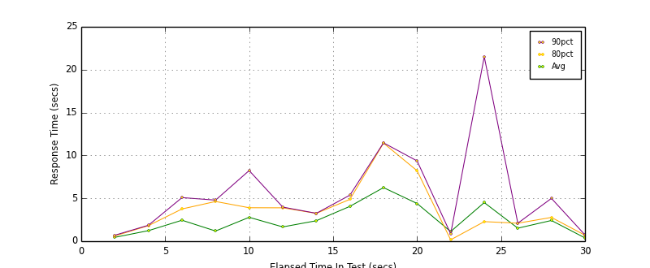
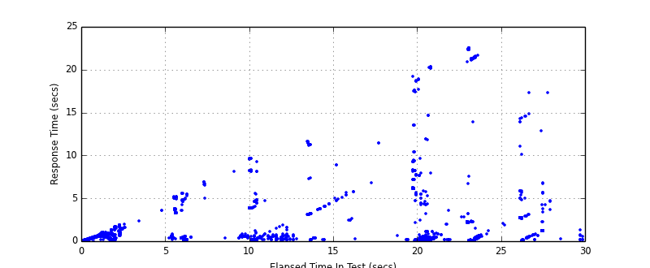
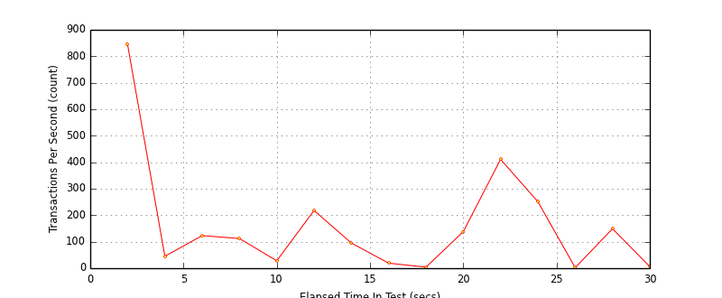

Performance Results Report
Summary
transactions: 5937
errors: 946
run time: 30 secs
rampup: 0 secs
test start: 2014-10-11 20:56:09
test finish: 2014-10-11 20:56:39
time-series interval: 2 secs
workload configuration:
| group name | threads | script name |
|---|
| user_group-1 | 100 | v_user.py |
| user_group-2 | 100 | v_user.py |
| user_group-3 | 100 | v_user.py |
| user_group-4 | 100 | v_user.py |
| user_group-5 | 100 | v_user.py |
| user_group-6 | 100 | v_user.py |
| user_group-7 | 100 | v_user.py |
| user_group-8 | 100 | v_user.py |
| user_group-9 | 100 | v_user.py |
| user_group-10 | 100 | v_user.py |
All Transactions
Transaction Response Summary (secs)
| count | min | avg | 80pct | 90pct | 95pct | max | stdev |
|---|
| 5937 | 0.023 | 2.299 | 3.333 | 7.731 | 11.091 | 28.023 | 4.518 |
Interval Details (secs)
| interval | count | rate | min | avg | 80pct | 90pct | 95pct | max | stdev |
|---|
| 1 | 1690 | 845.00 | 0.023 | 0.451 | 0.615 | 0.698 | 0.889 | 1.704 | 0.289 |
| 2 | 91 | 45.50 | 0.223 | 1.230 | 1.814 | 1.860 | 1.901 | 2.324 | 0.543 |
| 3 | 247 | 123.50 | 0.407 | 2.908 | 4.685 | 5.082 | 5.124 | 5.614 | 1.831 |
| 4 | 225 | 112.50 | 0.135 | 1.187 | 4.631 | 4.792 | 5.042 | 6.942 | 2.018 |
| 5 | 70 | 35.00 | 3.898 | 7.835 | 9.102 | 9.273 | 9.552 | 9.654 | 1.932 |
| 6 | 450 | 225.00 | 0.138 | 3.696 | 9.301 | 10.219 | 10.549 | 11.695 | 3.999 |
| 7 | 197 | 98.50 | 0.139 | 4.616 | 10.375 | 11.489 | 11.824 | 12.285 | 4.204 |
| 8 | 41 | 20.50 | 2.422 | 5.562 | 5.372 | 13.955 | 14.032 | 14.123 | 3.432 |
| 9 | 9 | 4.50 | 2.612 | 9.049 | 15.841 | 15.847 | 15.847 | 15.847 | 4.769 |
| 10 | 276 | 138.00 | 0.050 | 4.871 | 8.231 | 10.408 | 17.496 | 19.265 | 5.258 |
| 11 | 823 | 411.50 | 0.055 | 1.509 | 0.332 | 4.299 | 14.654 | 20.347 | 4.512 |
| 12 | 503 | 251.50 | 0.056 | 4.542 | 2.289 | 21.520 | 22.434 | 23.143 | 8.248 |
| 13 | 4 | 2.00 | 0.854 | 1.518 | 2.099 | 2.099 | 2.099 | 2.099 | 0.592 |
| 14 | 298 | 149.00 | 0.116 | 2.839 | 2.776 | 5.638 | 12.895 | 25.890 | 4.119 |
| 15 | 13 | 6.50 | 7.699 | 25.959 | 27.923 | 27.973 | 28.023 | 28.023 | 5.608 |
Graphs
Response Time: 2 sec time-series

Response Time: raw data (all points)

Throughput: 5 sec time-series

Custom Timer: response_time
Timer Summary (secs)
| count | min | avg | 80pct | 90pct | 95pct | max | stdev |
|---|
| 4898 | 0.023 | 1.720 | 2.224 | 4.644 | 8.161 | 22.526 | 3.824 |
Interval Details (secs)
| interval | count | rate | min | avg | 80pct | 90pct | 95pct | max | stdev |
|---|
| 1 | 1690 | 845.00 | 0.023 | 0.451 | 0.615 | 0.698 | 0.889 | 1.704 | 0.289 |
| 2 | 91 | 45.50 | 0.223 | 1.229 | 1.814 | 1.859 | 1.901 | 2.324 | 0.543 |
| 3 | 246 | 123.00 | 0.195 | 2.446 | 3.760 | 5.082 | 5.124 | 5.614 | 1.893 |
| 4 | 225 | 112.50 | 0.135 | 1.187 | 4.631 | 4.792 | 5.042 | 6.942 | 2.018 |
| 5 | 57 | 28.50 | 0.378 | 2.787 | 3.902 | 8.236 | 9.619 | 9.654 | 3.171 |
| 6 | 436 | 218.00 | 0.035 | 1.666 | 3.893 | 3.980 | 8.115 | 9.699 | 2.313 |
| 7 | 190 | 95.00 | 0.139 | 2.388 | 3.249 | 3.252 | 11.223 | 11.683 | 2.696 |
| 8 | 39 | 19.50 | 0.209 | 4.063 | 4.881 | 5.372 | 8.899 | 8.903 | 1.702 |
| 9 | 8 | 4.00 | 0.253 | 6.251 | 11.437 | 11.471 | 11.471 | 11.471 | 3.861 |
| 10 | 276 | 138.00 | 0.050 | 4.396 | 8.218 | 9.363 | 17.464 | 19.265 | 4.945 |
| 11 | 823 | 411.50 | 0.054 | 1.126 | 0.163 | 0.864 | 7.678 | 20.347 | 3.883 |
| 12 | 502 | 251.00 | 0.056 | 4.505 | 2.282 | 21.517 | 22.432 | 22.526 | 8.214 |
| 13 | 4 | 2.00 | 0.854 | 1.518 | 2.099 | 2.099 | 2.099 | 2.099 | 0.592 |
| 14 | 298 | 149.00 | 0.116 | 2.418 | 2.774 | 4.995 | 5.907 | 17.331 | 2.876 |
| 15 | 13 | 6.50 | 0.164 | 0.384 | 0.698 | 0.735 | 1.303 | 1.303 | 0.348 |
Graphs
Response Time: 2 sec time-series

Response Time: raw data (all points)

Throughput: 2 sec time-series
